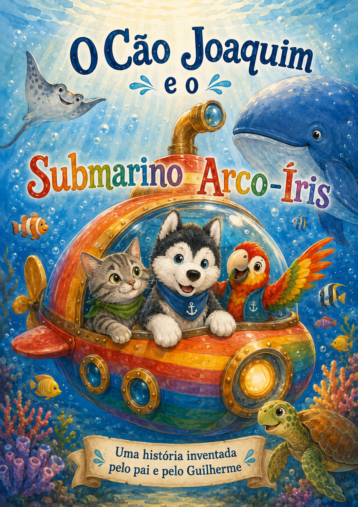

Biblioteca ilustrada
As Aventuras do
Cão Joaquim e amigos
Entra nas aventuras do Cão Joaquim e dos seus amigos, cheias de imaginação, gargalhadas e descobertas.

Primeira aventura
O Cão Joaquim e o Submarino Arco-Íris
Uma aventura no fundo do mar com o Gato Alberto, o Papagaio Gilberto, a Baleia Azul, a Raia Batata e a Tartaruga Joana.
Coleção